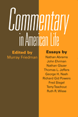

Commentary magazine's impact on American life, letters, and politics
Commentary magazine's impact on American life, letters, and politics


 Commentary magazine's impact on American life, letters, and politics
Commentary magazine's impact on American life, letters, and politics

|  |
Commentary in American Lifeedited by Murray Friedmanpaper EAN: 978-1-59213-106-8 (ISBN: 1-59213-106-9) |
"Commentary in American Life documents the critical role of Commentary in infusing intellectual energy into the successful anti-Communist struggle. We owe it, and in particular its former editor, Norman Podhoretz, a huge debt."
—William F. Buckley, Jr.
Founded by the American Jewish Committee in 1945 as a monthly journal of "significant thought and opinion, Jewish affairs and contemporary issues," Commentary magazine has through the years had a far-reaching impact on American politics and culture. Commentary in American Life traces this influence over time, especially in creating the neoconservative movement. The authors of each chapter also consider the ways the magazine shaped and reflected major cultural and literary trends in the United States. The end result offers a full accounting of one of the most important journals of American political thought, providing insight into the development of American collective politics and culture over the last six decades.
Excerpt available at www.temple.edu/tempress
"This collection is interesting and well researched, making a substantial contribution to the literature on American Jewish studies and neoconservatism. But this book is about the legacy of Commentary, not neoconservatism per se. Murray Friedman has organized this collection very carefully, and has included some excellent contributions. Commentary in American Life would be worthy of the magazine."
—Gary Dorrien, Parfet Distinguished Professor at Kalamazoo College, and author of The Neoconservative Mind and Imperial Designs: Neoconservatism and the New Pax Americana
"[T]his volume...provides an illuminating assessment of Commentary magazine...the growing scholarly and memoir literature on American conservatism and neo-conservatism has been significantly enhanced by this collection."
—History
"[T]his collection is not without value. It is fascinating, for instance, to learn of how close Commentary and National Review have become in recent years... Likewise, it is interesting to be reminded how adamantly Commentary has endorsed the aims and strategies of the right-wing evangelical movement in the U.S."
—American Jewish History
"The major attribute of the entire presentation is its vigorous commendation for the significance of the magazine."
—Jewish Journal
Introduction: Commentary: The First Sixty Years – Murray Friedman
1. 'America is Home': Commentary Magazine and the Refocusing of the Community of Memroy, 1945-1960 – Nathan Abrams
2. Commentary: The Early Years – Nathan Glazer
3. The Jewishness of Commentary – Ruth R. Wisse
4. Commentary and the City: Getting it Right, Getting it Wrong – Fred Siegel
5. What They Talked About When They Talked About Literature: Commentary in its First Three Decades – Thomas L. Jeffers
6. Commentary and the Common Culture – Terry Teachout
7. Norman Podhoretz and the Cold War – Richard Gid Powers
8. Joining the Ranks: Commentary and American Conservatism – George H. Nash
9. Commentary's Children: Neoconservatism in the Twenty-First Century – John Ehrman
About the Contributors
 | Murray Friedman (1926-2005) was the Director of the Myer and Rosaline Feinstein Center for American Jewish History at Temple University, and editor of Philadelphia Jewish Life, 1940-2000 (Temple), and a forthcoming history of Jewish conservatism. Read a tribute from The Temple Times. |
Contributors: Nathan Abrams, Birbeck College; John Ehrman; Nathan Glazer, Harvard University; Thomas L. Jeffers, Marquette University; George H. Nash; Richard Gid Powers, College of Staten Island and the CUNY Graduate Center; Fred Siegel, The Cooper Union; Terry Teachout; Ruth R. Wisse, Harvard University; and the editor.
Jewish Studies
History
American Studies
© 2015 Temple University. All Rights Reserved. This page: http://www.temple.edu/tempress/titles/1762_reg.html.